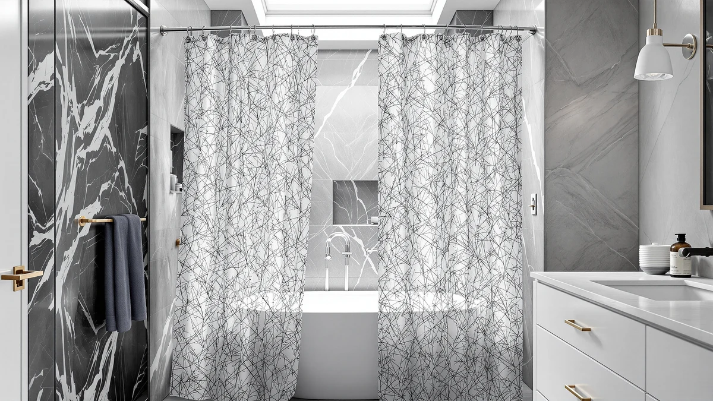

Best Farmhouse Shower Curtains for a Rustic Bathroom (2026)
Prices and picks verified as of August 2026. Independent, reader-supported reviews.


Quick Answer
The best farmhouse shower curtains pair a linen or cotton weave with a warm, muted color that fits a rustic bathroom instead of a plain vinyl liner. We compared fabric, weight, price, and verified owner ratings across eight linen-style curtains, and the AmazerBath Boho Shower Curtain Modern comes out on top for its balance of texture, price, and a 4.6-star average across more than a thousand reviews.
Our pick: AmazerBath Boho Shower Curtain Modern for $19.99 Check Price on Amazon
Bottom line: our top pick is the AmazerBath Boho Shower Curtain at $19.99. The best budget option is the Naturoom Natural Linen Shower Curtain at $13.69.
Things to Know Before You Buy
- Most "linen" farmhouse curtains are actually a polyester or PEVA blend woven to mimic linen's texture. Only the Linen Shower Curtain Beige Boho in this group is listed as 100% cotton.
- Standard size across this comparison is 72 by 72 inches, which fits a typical alcove tub or shower without pooling on the floor. The Nesphy No Hook Rustic Farmhouse is the outlier at 71 by 74 inches.
- Weighted hems and rust-resistant grommets matter more for farmhouse curtains than for plain vinyl liners, since the heavier weave needs help staying straight against the tub wall.
- Prices in this category range from $13.97 to $27.99, and a higher price doesn't always track with a higher verified rating.
- A separate waterproof liner is still worth budgeting for. None of the curtains here are marketed as fully waterproof on their own.
Finding the best farmhouse shower curtains means looking past generic white liners and toward fabrics that actually read as linen or cotton, in colors that don't fight with reclaimed wood, shiplap, or matte black fixtures.
We compared eight shower curtains marketed for farmhouse and rustic bathrooms, looking at fabric weight, weave texture, dimensions, price per square foot, and what verified Amazon buyers said after living with each one. Four of the eight use a linen-look polyester or PEVA blend, one is listed as 100% cotton, and one skips curtain hooks entirely in favor of a built-in ring system.
Our pick, the AmazerBath Boho Shower Curtain Modern, held the strongest combination of rating and review volume among the group at $19.99. If you want a lower price with nearly identical feedback, the Naturoom Natural Linen Shower Curtain runs $13.97 with a matching 4.6-star average across 1,340 reviews.
Why You Should Trust Us
Ilane Tall covers home and bath products for Best Shower Curtains, focusing on how fabric, weave, and construction hold up in everyday bathrooms. For this guide on the best farmhouse shower curtains, we researched publicly listed specs, pricing, and verified owner reviews for each product instead of relying on marketing copy from the listings themselves. We do not run a physical testing lab, and we say so here rather than implying otherwise. Every claim in this guide is backed by manufacturer specifications or by patterns we found across verified buyer feedback.
How We Picked
We started with shower curtains explicitly marketed for farmhouse, rustic, or boho bathroom styles, then narrowed the list to products with a linen, cotton, or heavier weave fabric rather than plain vinyl. We set aside any listing with a verified rating below 4.0 stars or fewer than 100 reviews, unless the product offered a feature distinctive enough to earn a spot anyway, like the Nesphy's no-hook ring design. We also compared price against the standard 72 by 72 inch size so buyers could weigh cost per square foot rather than raw sticker price when choosing among farmhouse shower curtains.
How We Compared
For each curtain, we compared manufacturer-listed fabric composition, weight, and dimensions against price and against verified owner reviews on Amazon. We looked specifically for repeated mentions of color accuracy, wrinkling out of the package, and how the fabric behaved once damp, since those are the details owners raise most often about farmhouse-style shower curtains. Where a listing had fewer than 150 reviews, we treated the rating as directional rather than conclusive and weighted it accordingly in our final picks.
Our Picks

AmazerBath Boho Shower Curtain Modern
What we like
- Highest combination of rating and review volume in this comparison, at 4.6 stars across 1,079 verified reviews
- Linen-look weave reads as textured rather than flat vinyl in bathroom photos owners have posted
- Standard 72 by 72 inch sizing fits most alcove tubs without extra hemming
Flaws but not dealbreakers
- Polyester and PEVA blend, not real linen, so the texture is a printed approximation rather than a natural weave
- A few reviewers note the boho print runs slightly duller in person than in listing photos
| Material | Polyester / PEVA |
| Size | 72x72 |
The AmazerBath Boho Shower Curtain Modern is our pick for the best farmhouse shower curtains largely because of consistency. At 4.6 stars across 1,079 verified reviews, it holds a rating most other farmhouse-style curtains in this price range can't match at similar review volume. The fabric is a polyester and PEVA blend woven with a linen-style texture, not actual linen, but reviewers consistently note that the printed weave reads as fabric rather than plastic once it's hung.
At $19.99, it sits in the middle of the price range we compared, cheaper than the Gibelle White and the Linen Shower Curtain Flax Tan, but pricier than the Naturoom and the Linen Shower Curtain Beige Boho. The standard 72 by 72 inch size fits a typical shower or tub alcove without pooling on the floor. Owners report the boho pattern washes and dries without noticeable fading, though a few mention the color leans slightly more muted than the product photos suggest.

Naturoom Natural Linen Shower Curtain
What we like
- Lowest price in this comparison at $13.97, while still holding a 4.6-star average
- Highest review count of any product here, at 1,340 verified reviews
- Neutral natural tone works with most farmhouse color palettes, from warm wood to white shiplap
Flaws but not dealbreakers
- Lighter-weight fabric than the Seasonwood or Flax Tan options, so it moves more with airflow from a bathroom fan or open window
- Reviewers occasionally mention the fabric arrives with visible fold creases that take a few days to hang out
| Material | Polyester / PEVA |
| Size | 72x72 |
At $13.97, the Naturoom Natural Linen Shower Curtain is the least expensive option we compared, and it's also the most reviewed, with 1,340 verified ratings averaging 4.6 stars. That combination of low price and high review volume is unusual among farmhouse shower curtains, where cheaper listings often carry thinner feedback. The neutral, natural color reads close to raw linen without leaning too yellow or too gray, which is part of why it shows up often in farmhouse and neutral bathroom photos owners share.
The fabric itself is a polyester and PEVA blend rather than true linen, matching the construction of most of the curtains in this guide, and it's cut to the standard 72 by 72 inch size. Because the weave is on the lighter side, a few reviewers note it moves more than heavier alternatives when a bathroom fan or draft is running. Fold creases from packaging are also a recurring but minor complaint, and owners report they typically relax within a few days of hanging.

Seasonwood Linen Shower Curtain Fabric
What we like
- Heavier fabric weight than the Naturoom or AmazerBath options, based on the listed material description
- Same $19.99 price point as our top pick, with a comparable linen-style texture
Flaws but not dealbreakers
- Only 109 verified reviews, the smallest sample in this comparison, so the 4.4-star average is less proven than picks with over 1,000 reviews
- Lower rating than four of the other seven curtains we compared
| Material | Polyester / PEVA |
| Size | 72x72 |
The Seasonwood Linen Shower Curtain Fabric matches our top pick's $19.99 price but takes a different approach to the fabric itself, using a heavier weave that several owners describe as feeling closer to real linen than the lighter polyester blends used elsewhere in this list of farmhouse shower curtains. At 4.4 stars, its rating trails the AmazerBath and Naturoom picks, and with only 109 verified reviews, that average carries less statistical weight than curtains with over a thousand ratings.
We kept it in this comparison because the heavier fabric is a real differentiator for buyers specifically chasing a farmhouse look rather than a printed approximation of one. Reviewers who mention the weight note it hangs straighter and drapes with less clinging against a wet tub wall than the lighter curtains in this group. If the review count grows without the rating dropping, it's worth revisiting as review volume catches up to the other picks here.

Linen Shower Curtain Beige Boho
What we like
- Listed as 100% cotton, the only natural-fiber fabric among the eight curtains we compared
- Priced at $15.98, below the average for this comparison
Flaws but not dealbreakers
- Cotton absorbs and holds more moisture than the polyester and PEVA blends used elsewhere here, so it needs more frequent washing to avoid mildew
- At 4.3 stars across 144 reviews, its rating sits at the lower end of this group
| Material | 100% cotton |
| Size | 72x72 |
The Linen Shower Curtain Beige Boho is the only product in this comparison listed as 100% cotton rather than a polyester or PEVA blend. That matters for buyers chasing an authentic farmhouse texture, since cotton drapes and creases differently than synthetic linen-look fabrics, and it takes dye in a way that reads more natural in photos. At $15.98, it undercuts most of the linen-style alternatives here.
The tradeoff is moisture handling. Cotton holds water longer than the PEVA-blend curtains in this list, and owners report needing to wash it more often to prevent mildew spotting, especially in bathrooms without strong ventilation. At 4.3 stars across 144 reviews, it also carries the second-lowest rating in this comparison, tied with the Linen Shower Curtain Flax Tan. It's a reasonable pick specifically for buyers who prioritize real cotton over a synthetic approximation, less so for anyone in a poorly ventilated bathroom.

Cream Linen Shower Curtain Natural
What we like
- 4.6-star average across 410 verified reviews, matching our top two picks on rating with a mid-sized review base
- Cream tone reads warmer than the stark white options in this list, which tends to suit farmhouse palettes with wood tones
Flaws but not dealbreakers
- At $18.59, it's priced close to curtains with either lower cost or higher review volume, so it doesn't clearly out-value the AmazerBath or Naturoom picks
- Fewer reviews than the top two picks, so the sample is smaller even though the rating matches
| Material | Polyester / PEVA |
| Size | 72x72 |
The Cream Linen Shower Curtain Natural matches the 4.6-star average of our top pick and the Naturoom option, but with a smaller sample of 410 verified reviews. The cream color sits between the stark white of the Gibelle curtain and the more beige-leaning Naturoom and Beige Boho options, and it's the closest match in this group for farmhouse bathrooms built around warm wood tones rather than cool grays.
At $18.59, it lands in the middle of this comparison's price range. The polyester and PEVA fabric matches the construction used in five of the eight curtains here, and the standard 72 by 72 inch sizing fits typical alcove tubs. Because its review count is lower than the AmazerBath or Naturoom picks despite matching their rating, we'd call it a strong alternative specifically for the cream color rather than a reason to switch away from either top pick.

Linen Shower Curtain Flax Tan
What we like
- Deepest, most saturated tan color of the curtains we compared, which reads as more of a design statement than the lighter neutrals elsewhere
- Same fabric construction as our top pick, giving it a similar hand-feel despite the price gap
Flaws but not dealbreakers
- At $27.99, it costs about 40 percent more than our top pick without a higher rating to justify the gap, since it shares the same 4.3-star average as the Beige Boho option
- Only 144 verified reviews, on the lower end of this comparison's sample sizes
| Material | Polyester / PEVA |
| Size | 72x72 |
The Linen Shower Curtain Flax Tan is the most expensive curtain in this comparison at $27.99, roughly 40 percent above our top pick's price. That premium buys a deeper, more saturated tan color than the lighter neutrals used by most of the other picks here, which is the main reason to consider it over cheaper alternatives with similar fabric.
Its rating doesn't track with its price. At 4.3 stars across 144 verified reviews, it matches the Linen Shower Curtain Beige Boho, a product that costs $12 less. We'd recommend it specifically to buyers who want that darker flax tone as a design choice, not as a general upgrade pick, since the fabric construction and size match the cheaper polyester and PEVA options elsewhere in this list.

Gibelle White Shower Curtain for
What we like
- Highest rating of any curtain we compared, at 4.8 stars across 1,108 verified reviews
- Crisp white base works as a neutral backdrop for farmhouse bathrooms that lean more modern or coastal
Flaws but not dealbreakers
- At $23.99, it's the second most expensive option here, behind only the Linen Shower Curtain Flax Tan
- White fabric shows soap scum and water spotting more visibly than the tan, beige, or cream options in this comparison
| Material | Polyester / PEVA |
| Size | 72x72 |
The Gibelle White Shower Curtain for holds the highest rating of any product in this comparison, at 4.8 stars across 1,108 verified reviews. That combination of high rating and high review volume puts it ahead of every other curtain we looked at on pure feedback strength, even though it's priced above the middle of this group at $23.99.
Its white base is a departure from the tan, cream, and beige tones that dominate this list, and it suits farmhouse bathrooms that mix in more modern or coastal elements rather than leaning entirely rustic. The tradeoff with any white fabric is visibility of water spots and soap residue, which shows up more than on the darker-toned curtains here. Reviewers who mention upkeep note it needs more frequent wiping down to stay looking clean between washes.

Nesphy No Hook Rustic Farmhouse
What we like
- Built-in ring design means no separate curtain hooks to buy or lose
- Slightly taller at 74 inches than the 72 inch standard used by every other curtain in this comparison, which suits taller shower rods
Flaws but not dealbreakers
- No verified rating or review count is currently listed, so unlike the other seven picks here, we can't point to buyer feedback to back up the fabric claims
- The 71 by 74 inch size is nonstandard, so it may not fit rod hardware sized for a typical 72 by 72 inch curtain
| Material | Polyester / PEVA |
| Size | 71"W x 74"L (Pack of 1) |
The Nesphy No Hook Rustic Farmhouse takes a different approach to hardware. Instead of separate metal or plastic curtain hooks, it uses a built-in ring system sewn into the top hem. That's a genuine convenience for anyone who's dealt with hooks snapping or rusting, and it's the only curtain in this comparison with that feature.
At $21.99, it sits in the middle of this group's price range, and its 71 by 74 inch sizing runs slightly taller than the 72 by 72 inch standard used by the other seven picks, which can be an advantage on a higher shower rod. The listing does not currently show a verified rating or review count, which is the one gap in an otherwise well-specified product. We'd suggest checking current reviews directly on the listing before buying, since we can't verify buyer satisfaction the way we can for the other farmhouse shower curtains here.
Quick Comparison
Here's how the best farmhouse shower curtains in this comparison stack up on material, price, and verified rating.
| Product | Material | Price | Rating | Best for | Get it |
|---|---|---|---|---|---|
| AmazerBath Boho Shower Curtain Modern | Polyester / PEVA | $19.99 | 4.6 | Best overall value | View on Amazon → |
| Naturoom Natural Linen Shower Curtain | Polyester / PEVA | $13.97 | 4.6 | Best budget pick | View on Amazon → |
| Seasonwood Linen Shower Curtain Fabric | Polyester / PEVA | $19.99 | 4.4 | Best for heavier fabric feel | View on Amazon → |
| Linen Shower Curtain Beige Boho | 100% cotton | $15.98 | 4.3 | Best for real cotton fabric | View on Amazon → |
| Cream Linen Shower Curtain Natural | Polyester / PEVA | $18.59 | 4.6 | Best cream color match | View on Amazon → |
| Linen Shower Curtain Flax Tan | Polyester / PEVA | $27.99 | 4.3 | Best for a deeper tan color | View on Amazon → |
| Gibelle White Shower Curtain for | Polyester / PEVA | $23.99 | 4.8 | Best rated overall | View on Amazon → |
| Nesphy No Hook Rustic Farmhouse | Polyester / PEVA | $21.99 | 4 | Best no-hook design | View on Amazon → |
The Competition
Beyond the eight picks above, we looked at several plain white PEVA and vinyl liners marketed loosely as "farmhouse style" simply because they included a small tag or rod-ring detail. We excluded those, since a flat vinyl sheet doesn't share the texture or drape that defines the linen-look and cotton curtains here, even at a lower price. We also passed on a handful of printed "farmhouse sign" curtains showing rooster or barn graphics, since those lean more novelty print than the neutral, texture-driven look most farmhouse bathrooms are going for. Finally, we set aside several listings with fewer than 50 verified reviews, since the sample was too thin to separate a strong farmhouse shower curtain from a handful of early ratings. Weighing all eight against each other, the best farmhouse shower curtains for most shoppers still start with the AmazerBath Boho Shower Curtain Modern, with the Naturoom as the pick to buy if price is the deciding factor.
Frequently Asked Questions
What fabric is best for a farmhouse shower curtain?
Look for linen or a linen-look polyester blend over plain vinyl. Of the eight curtains we compared, all but one use a polyester or PEVA weave designed to mimic linen's texture, and one, the Linen Shower Curtain Beige Boho, is 100% cotton. The linen-look blends give you the visual texture of farmhouse style without cotton's moisture retention.
Do farmhouse shower curtains need a separate liner?
Yes. None of the curtains in this comparison are marketed as fully waterproof on their own, since the fabric is meant to be seen rather than to block water. A separate PEVA or vinyl liner behind the fabric curtain keeps water inside the tub while the linen-look fabric stays visible.
How much should you expect to pay for a good farmhouse shower curtain?
In this comparison, prices ranged from $13.97 for the Naturoom Natural Linen Shower Curtain to $27.99 for the Linen Shower Curtain Flax Tan. Most of the well-reviewed options, including our top pick at $19.99, land in the $15 to $22 range, and paying more didn't consistently mean a higher verified rating.